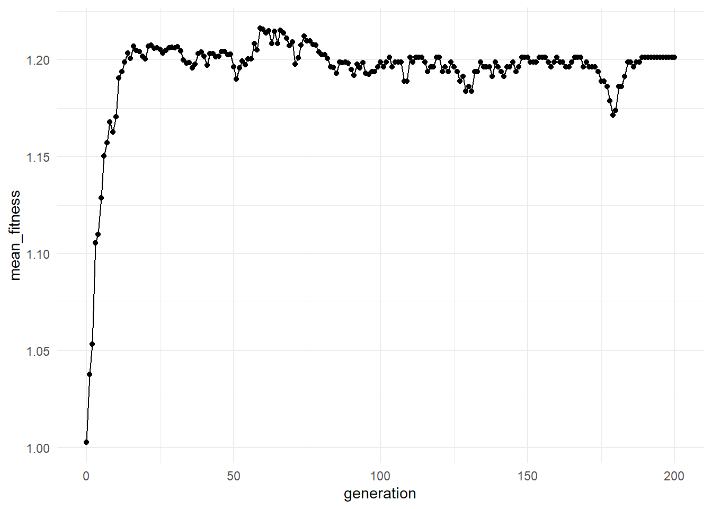
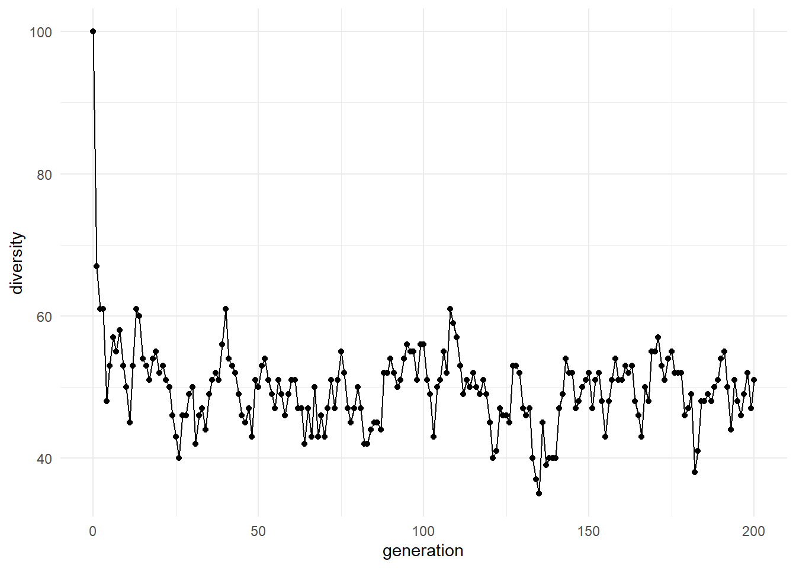

Chapter 3 Molecular Evolution
3.1 Why Molecular Evolution Matters
One of the central questions in origin-of-life research is how simple chemistry became capable of evolution.
Modern biological evolution depends on three fundamental ingredients:
- Information
- Replication
- Variation
Today these functions are carried out primarily by DNA, RNA, and proteins. However, before modern cells existed, simpler molecular systems may have possessed primitive versions of these capabilities.
Molecular evolution studies how populations of molecules change through time when information is copied imperfectly and some variants become more successful than others.
Understanding molecular evolution helps bridge the gap between prebiotic chemistry and the emergence of life.
3.2 From Prebiotic Chemistry to Evolution
The previous chapter introduced prebiotic molecular pools. These pools contain diverse molecules that may have formed through natural chemical processes on the early Earth.
Diversity alone, however, is not sufficient for evolution.
For evolution to occur:
- Molecules must differ from one another.
- Some molecules must persist or reproduce more successfully than others.
- Information must be transmitted between generations.
- New variants must appear.
- Successful variants must become more common through time.
When these conditions are satisfied, populations can evolve.
This transition from chemistry to evolution represents one of the most important steps in the origin of life.
3.3 The RNA World Hypothesis
One of the most influential origin-of-life theories is the RNA World hypothesis.
The central idea is that early life may have been based primarily on RNA-like molecules.
RNA is particularly interesting because it can perform two critical functions:
- Store information
- Catalyze chemical reactions
Modern life separates these functions among DNA, RNA, and proteins. The RNA World hypothesis proposes that earlier biological systems may have relied on a single class of molecules capable of doing both.
If correct, evolution may have begun before cells, genomes, and proteins existed.
Although the RNA World remains one of the leading hypotheses, researchers continue to investigate alternative and complementary explanations involving metabolism, compartments, and autocatalytic networks.
3.4 Information and Heredity
Evolution requires information.
In biological systems, information refers to patterns that can be copied and transmitted.
For example:
AUGCAUGCAUGCcontains information because the arrangement of symbols matters.
When sequences are copied, information is inherited. When copying errors occur, variation is introduced.
The interaction between heredity and variation forms the foundation of evolution.
Without heredity, successful innovations would be lost. Without variation, populations could not adapt or explore new possibilities.
3.5 Conceptual Model
In lifesimulatoR, molecular evolution is represented using symbolic molecular sequences.
The model contains five major processes:
- Molecular populations
- Fitness evaluation
- Replication
- Mutation
- Selection
Together, these processes generate evolutionary dynamics.
Although simplified, the model captures the essential logic underlying evolutionary change.
3.6 Creating a Molecular Population
Evolution begins with a population of molecules.
pool <- create_prebiotic_pool(
n_molecules = 50,
alphabet = c("A", "U", "G", "C"),
min_length = 5,
max_length = 15,
seed = 123
)
head(pool)## [1] "UGUUUGA" "UUAUGCAG" "ACAAAGCUGUAUGCU" "GGACG" "AGAAUGGCAGAGCU" "UAACCGAUAAGAU"Each sequence represents a symbolic molecule.
Although these molecules are simplified abstractions, they allow us to explore the logic of molecular evolution.
3.7 Molecular Fitness
Not all molecules are equally successful.
The concept of fitness attempts to capture how likely a molecule is to persist or contribute descendants to future generations.
In real chemistry, fitness may depend on factors such as:
- Stability
- Catalytic activity
- Replication efficiency
- Environmental conditions
- Resource availability
In lifesimulatoR, fitness is represented using a simplified scoring function.
molecules <- c(
"AUGC",
"AAAAUUUU",
"GCGCGC",
"AUAUAUAUAUAU"
)
fitness <- molecule_fitness(molecules)
data.frame(
molecule = molecules,
fitness = fitness
)## molecule fitness
## 1 AUGC 0.6993290
## 2 AAAAUUUU 1.0687308
## 3 GCGCGC 0.8876282
## 4 AUAUAUAUAUAU 1.25000003.8 Fitness Landscapes
Evolution is often visualized using the concept of a fitness landscape.
A fitness landscape maps molecular structures to fitness values.
- High-fitness molecules occupy peaks.
- Low-fitness molecules occupy valleys.
- Mutation moves populations through the landscape.
- Selection tends to push populations toward higher-fitness regions.
Although fitness landscapes are simplified conceptual tools, they help explain how populations can gradually become better adapted.
A useful way to think about evolution is as a search process moving through a landscape of possibilities.
3.9 Replication
Replication is the process by which molecules produce copies of themselves.
Without replication, successful molecules cannot become more common.
next_generation <- replicate_molecules(
molecules = molecules,
n_molecules = 20,
selection_strength = 1
)
next_generation## [1] "AAAAUUUU" "AAAAUUUU" "AUGC" "AUAUAUAUAUAU" "AUAUAUAUAUAU" "GCGCGC" "AUAUAUAUAUAU"
## [8] "AUAUAUAUAUAU" "AUAUAUAUAUAU" "GCGCGC" "AUAUAUAUAUAU" "AUGC" "AAAAUUUU" "AAAAUUUU"
## [15] "GCGCGC" "AUAUAUAUAUAU" "AUAUAUAUAUAU" "AUGC" "AAAAUUUU" "GCGCGC"Replication allows information to persist through time.
Every evolutionary process depends on some mechanism that preserves information from one generation to the next.
3.10 Mutation
Mutation introduces novelty into a molecular population.
Without mutation, evolution would eventually stop because no new variants could appear.
original <- "AUGCAUGCAUGC"
mutated <- mutate_sequence(
sequence = original,
alphabet = c("A", "U", "G", "C"),
mutation_rate = 0.05
)
data.frame(
original = original,
mutated = mutated
)## original mutated
## 1 AUGCAUGCAUGC AUGGAUGCGUGCMutation generates diversity, but excessive mutation can also destroy information.
3.11 Mutation Rate and the Evolutionary Trade-Off
Mutation creates one of evolution’s most important trade-offs.
Low mutation rates:
- Preserve information
- Limit innovation
High mutation rates:
- Generate novelty
- Risk destroying successful structures
Evolution requires a balance between stability and innovation.
Too little mutation limits exploration. Too much mutation prevents successful information from being preserved.
3.12 The Error Threshold
One of the most important concepts in molecular evolution is the error threshold.
If mutation rates become too high:
- Successful sequences cannot be preserved.
- Information is lost.
- Selection becomes ineffective.
This idea is closely associated with Eigen’s work on early replicators.
A major challenge for the earliest evolving systems may have been maintaining enough copying accuracy to preserve information while still generating useful variation.
The error threshold remains a central concept in studies of the origin of life.
3.13 Selection
Selection occurs whenever some molecules contribute more descendants than others.
Selection is not a conscious process. It emerges automatically whenever certain variants persist or replicate more successfully.
In the simulation:
- Weak selection produces nearly neutral evolution.
- Strong selection favors fitter molecules more strongly.
Selection acts as a filter on variation.
Mutation generates possibilities. Selection determines which possibilities persist.
3.14 Evolving One Generation
Mutation, replication, and selection can be combined into a single evolutionary step.
next_generation <- evolve_generation(
molecules = pool,
mutation_rate = 0.02,
selection_strength = 1
)
head(next_generation)## [1] "UUAUGCAG" "GCCGUGC" "UUCACUACCA" "UAUGCAAC" "UCUGAUCACUAC" "UUUGCGGUAUC"This represents one generation of molecular evolution.
Repeated application of this process can produce long-term evolutionary change.
3.15 Simulating Molecular Evolution
The full simulation repeatedly applies mutation, replication, and selection across many generations.
sim <- simulate_abiogenesis(
n_molecules = 100,
generations = 200,
mutation_rate = 0.02,
selection_strength = 1,
seed = 123
)
head(sim)## # A tibble: 6 × 6
## generation n_molecules mean_length mean_fitness diversity max_fitness
## <int> <int> <dbl> <dbl> <int> <dbl>
## 1 0 100 12.6 1.00 100 1.25
## 2 1 100 12.7 1.04 67 1.25
## 3 2 100 12.3 1.05 61 1.25
## 4 3 100 12.3 1.11 61 1.25
## 5 4 100 12.5 1.11 48 1.25
## 6 5 100 12.8 1.13 53 1.253.16 Visualizing Fitness Through Time

This plot helps reveal whether fitter molecular variants become more common through time.
3.17 Visualizing Diversity Through Time

Diversity provides information about how broadly the population is exploring sequence space.
3.18 Interpreting Simulation Results
Several outcomes are possible.
3.18.1 Increasing Fitness
May indicate:
- Successful variants becoming more common
- Selection acting effectively
3.18.2 Increasing Diversity
May indicate:
- Exploration of new sequence space
- Significant mutation activity
3.19 Evolution as Information Processing
A useful way to think about evolution is as a process that accumulates information.
Mutation generates possibilities.
Selection filters possibilities.
Replication preserves successful patterns.
Together, these processes can gradually increase organization within a population.
From this perspective, evolution can be viewed as a mechanism for discovering and preserving useful information.
3.20 Limitations of the Model
This model intentionally omits many aspects of real chemistry, including:
- RNA folding
- Catalytic mechanisms
- Resource competition
- Environmental fluctuations
- Thermodynamics
- Spatial organization
- Membrane compartmentalization
- Metabolic networks
The goal is conceptual clarity rather than chemical realism.
3.21 Connections to Later Chapters
Molecular evolution addresses how information-bearing molecules may change through time.
However, life requires more than information.
Living systems also require:
- Compartments
- Networks
- Energy flow
- Self-maintenance
The next chapters explore diversity, complexity, protocells, and autocatalytic networks to examine how these additional ingredients may have contributed to the emergence of life.
3.22 Key Takeaways
- Molecular evolution may have preceded modern cellular life.
- The RNA World hypothesis provides one possible framework for early evolution.
- Replication, mutation, and selection generate evolutionary change.
- Fitness landscapes help explain adaptation.
- Excessive mutation can destroy information through the error threshold.
- Evolution can be viewed as an information-processing process.
- Molecular populations can accumulate organization through repeated cycles of variation and selection.
lifesimulatoRprovides simplified computational models for exploring these concepts.
3.23 Suggested Readings
- Eigen, M. (1971). Self-Organization of Matter and the Evolution of Biological Macromolecules.
- Gilbert, W. (1986). The RNA World.
- Joyce, G. F. (2002). The Antiquity of RNA-Based Evolution.
- Maynard Smith, J., & Szathmáry, E. (1999). The Origins of Life.
- Kauffman, S. (1993). The Origins of Order.
3.24 Reflection Questions
- Why is information essential for evolution?
- Could evolution occur before cells existed?
- What limits the mutation rate of early replicators?
- How does the concept of a fitness landscape help explain adaptation?
- Is higher fitness always associated with greater complexity?
- Could molecular evolution begin before metabolism?
- What additional mechanisms are needed to transform evolving molecules into living systems?
- What aspects of molecular evolution are not captured by symbolic sequence models?
- Can selection create information, or only preserve it?
- What role might molecular evolution have played in the transition from chemistry to biology?